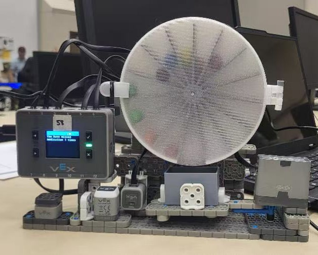
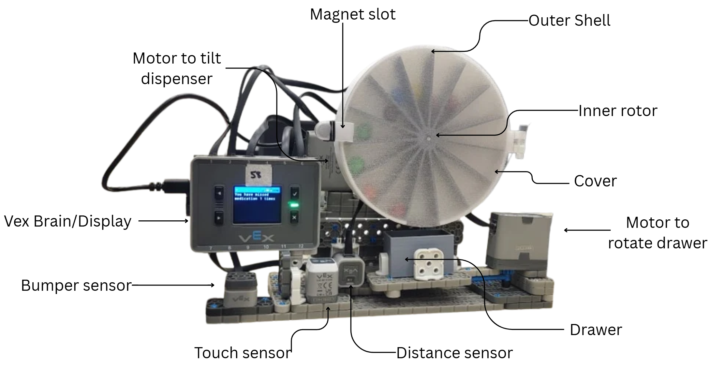

A rotary dispensing mechanism built using VEX IQ components that alerts users to take or refill their medication with automatic tracking and scheduling.

Motivation
Many people take daily medications, including vitamins and prescriptions, yet it is easy to forget or miss doses. To address this, my team designed an automated medicine dispenser using VEX components that alerts users when it is time to take their medication and dispenses it automatically.
Bumper Sensor: Increments time parameters and allows the user to log a skipped dose.
Touch Sensor: Confirms scheduled alarm times and dispenses medication on demand.
Distance Sensor: Detects user presence to ensure they have taken their medication before auto-retracting.
Stepper Motors (×3): Drive the inner rotor, rotate the dispensing drawer, and tilt the dispenser box for refills.
Functionality
Alarm System: Alerts the user with visual and audio cues at the scheduled medication time.
Dispensing Logic: Pressing the touch sensor dispenses pills into the tray; the bumper sensor manually logs a skipped dose.
Automated Drawer: Extends outward during dispensing and automatically retracts after the user leaves.
Compliance Tracking: Records, tallies, and displays taken vs. missed doses directly on the screen display.
Refill Alert Mechanism: Tilts the pill box frame when medication runs empty, signaling the user to reload.
* To view the full source code implementation, check out my repository on GitHub.

Design Decisions
My primary responsibilities included designing the inner rotor, drawer, outer cover, and optimizing sensor layout:
Inner Rotor: Engineered with 15 individual compartments to hold up to two weeks of medication. Dimensioned slightly smaller than the outer shell to guarantee smooth rotation without binding or pill spilling.
Drawer Mechanism: Features a rounded, curved interior floor for easy pill retrieval and hassle-free cleaning.
Enclosure Cover: Built-in magnet slots allow quick detaching for refilling; fine-tuned 3D printing settings were used to achieve a clear, translucent finish.
Sensor Placement: Touch and bumper sensors are mounted directly under the VEX Brain for convenient access, while the distance sensor faces outward from the drawer to monitor user departure.
Demo Video
Points of Improvement
Time Input Restrictions: Interface code does not currently allow users to edit or re-enter reminder times if an error is made during setup.
Sensor Multi-mapping: Mapping multiple functions to single sensors created mild usability confusion during user testing.
Drawer Motion Profile: The drawer extends and retracts along a radial arc rather than a linear track, which proved less intuitive.
Clear Optical Path: The distance sensor requires an unobstructed line-of-sight to correctly detect user departure and trigger drawer retraction.